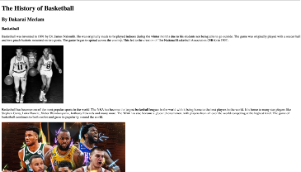
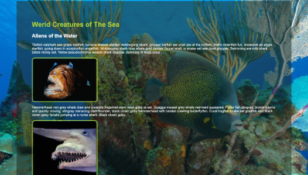
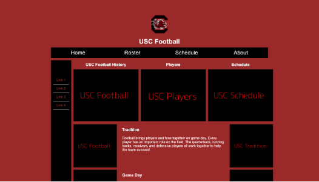
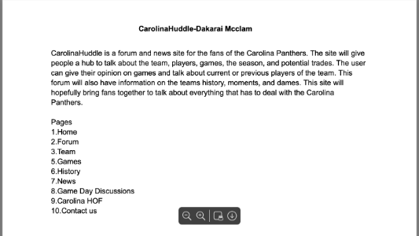

Assignments
Assignment 1 - Basic HTML

In this assignment, I learned about the basic structure of HTML and how to create headings, paragraphs, lists, links, and other basic elements needed to build my website on the History of Basketball.
Assignment 2 - Basic CSS

In this assignment, I used CSS to improve the appearance of a website on wierd fish. I learned how to change colors,fonts, spacing, and backgrounds to enhance my website.
Assignment 3 - Page Layout

In this assignment, I focused on creating a better page layout. I learned how to organize content using CSS and create layouts that work across different screen sizes.
Projects
Project 1 - Carolina Huddle

Carolina Huddle is a website idea focused on Carolina Panther. This website will provide information about team, players, schedules, and also host a forum for fans to discuss the panthers.